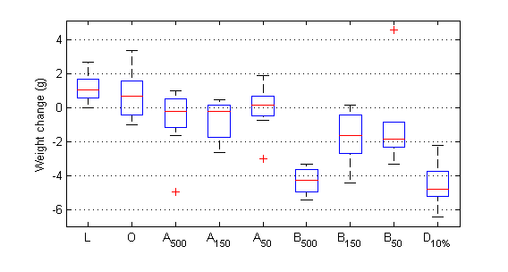
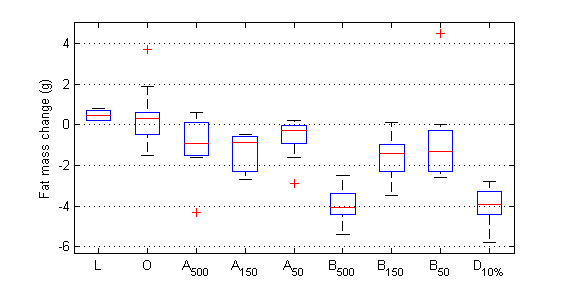
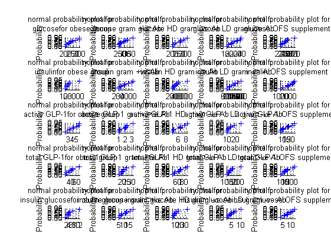
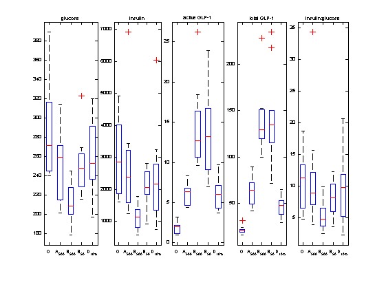
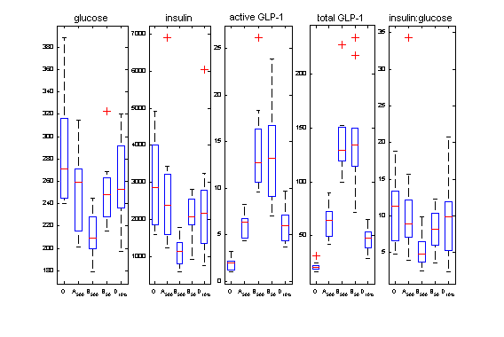

Contents
Initial configuration
close all
clear all
path(path,'./support_scripts/')
[metaboliteFileName, otuFileName] = fileNameCheck('results2.txt', 'otu_table3.txt');
[mconditionStr, metaboliteName, metabolite] = separateMetaboliteVars(metaboliteFileName);
for i=1:59
metabolite(27,i)=metabolite(18,i)/metabolite(1,i);
end
metaboliteName{1} = 'glucose';
metaboliteName{18} = 'insulin';
metaboliteName{27}='insulin:glucose';
[norm, maverages, mstderrors, mcategory] = metaboliteBasicstats(metabolite,mconditionStr);
[hvalue, pvalue]=ttest2(mcategory{1,2}{27,2},mcategory{4,2}{27,2});
Plots to help see relation between glucose and insulin and ins:glu ratio
weight_loss_figure;
weight = [weightchange(:,1); weightchange(:,2);weightchange(1:9,3);weightchange(:,6);weightchange(:,8);weightchange(:,9)];
aglp=metabolite(25,:);
tglp=metabolite(26,:);
X=[ones(length(weight),1) weight metabolite(1:26,:)'];
y=metabolite(27,:)';
j=1;
metaboliteName1{1}='intersect';
for i=1:length(metaboliteName)
metaboliteName1{i+1}=metaboliteName{i};
end
for i=1:length(y)
if (isnan(y(i)))
else
y1(j)=y(i);
X1(j,:)=X(i,:);
j=j+1;
end
end
mdl2=stepwiselm(X1,y1,'PEnter',0.06,'ResponseVar','insulin resistence','PredictorVars',metaboliteName1);
ans =
Columns 1 through 7
26.8200 40.6700 40.3200 39.9900 40.5300 40.9700 40.8900
Columns 8 through 9
40.1600 40.4800
ans =
Columns 1 through 7
28.0400 41.4300 39.6333 39.3800 40.3222 36.7100 39.0333
Columns 8 through 9
38.9600 35.9000
ans =
Columns 1 through 7
3.2800 15.5900 15.3000 15.2100 15.4500 15.5400 15.6200
Columns 8 through 9
15.2700 15.2600
ans =
Columns 1 through 7
3.7400 15.9900 14.1444 13.9400 14.6778 11.6400 13.9667
Columns 8 through 9
14.3800 11.2100
mmn =
-1
mmn =
-1
BW p value:L
p =
0.0012
baseline corrected BW p value:L
p =
0.9405
fat p value:L
p =
1.4563e-04
baseline corrected fat p value:L
p =
0.4344
BW p value:O
p =
0.1204
baseline corrected BW p value:O
p =
0.3466
fat p value:O
p =
0.4193
baseline corrected fat p value:O
p =
1.0000
BW p value:A_{500}
p =
0.3122
baseline corrected BW p value:A_{500}
p =
0.0150
fat p value:A_{500}
p =
0.0806
baseline corrected fat p value:A_{500}
p =
0.0226
BW p value:A_{150}
p =
0.0989
baseline corrected BW p value:A_{150}
p =
4.0022e-04
fat p value:A_{150}
p =
0.0011
baseline corrected fat p value:A_{150}
p =
1.5989e-04
BW p value:A_{50}
p =
0.9633
baseline corrected BW p value:A_{50}
p =
0.0361
fat p value:A_{50}
p =
0.0957
baseline corrected fat p value:A_{50}
p =
0.0151
BW p value:B_{500}
p =
1.7575e-08
baseline corrected BW p value:B_{500}
p =
1.9618e-09
fat p value:B_{500}
p =
1.2767e-07
baseline corrected fat p value:B_{500}
p =
5.4573e-08
BW p value:B_{150}
p =
0.0083
baseline corrected BW p value:B_{150}
p =
3.6601e-04
fat p value:B_{150}
p =
0.0023
baseline corrected fat p value:B_{150}
p =
5.5893e-04
BW p value:B_{50}
p =
0.1210
baseline corrected BW p value:B_{50}
p =
0.0076
fat p value:B_{50}
p =
0.2118
baseline corrected fat p value:B_{50}
p =
0.0832
BW p value:D_{10%}
p =
1.5054e-06
baseline corrected BW p value:D_{10%}
p =
2.0597e-07
fat p value:D_{10%}
p =
3.6407e-07
baseline corrected fat p value:D_{10%}
p =
1.6156e-07
unpaired t-test for delta weight against obese control:A_{500}
h =
0
p =
0.0726
unpaired t-test for delta weight against obese control:A_{150}
h =
1
p =
0.0234
unpaired t-test for delta weight against obese control:A_{50}
h =
0
p =
0.2683
unpaired t-test for delta weight against obese control:B_{500}
h =
1
p =
8.1375e-09
unpaired t-test for delta weight against obese control:B_{150}
h =
1
p =
0.0016
unpaired t-test for delta weight against obese control:B_{50}
h =
1
p =
0.0295
unpaired t-test for delta weight against obese control:D_{10%}
h =
1
p =
5.9830e-08
1. Adding Amylin, FStat = 406.3868, pValue = 1.807879e-24
2. Adding NEFA mEq/L, FStat = 160.5211, pValue = 1.914427e-16
3. Adding NEFA mEq/L:Amylin, FStat = 195.1909, pValue = 8.777328e-18
 
Generate stats and graphs between lean and obese controls
variableIndex = [1 18 25 26 27];
logswitch = [0 0 0 0 0];
groups = [2 3 4 5 6];
horizontal=0;
[h1, hs1] = normalisationTest(variableIndex, mcategory, norm, metaboliteName, logswitch, groups, horizontal);
[pvalues, string_answers, h2, hs2] = generateBoxPlotsAndAnovaPValue(variableIndex, mcategory, metaboliteName, logswitch, groups);
h1 =
3
'glucose Lean 0.87055'
'glucose Vehicle 0.61212'
'glucose Vancomycin 0.79858'
'glucose Ceftazadine_low 0.97961'
'glucose Ceftazadine_high 0.87915'
'insulin Lean 0.33031'
'insulin Vehicle 0.90642'
'insulin Vancomycin 0.61477'
'insulin Ceftazadine_low 0.9891'
'insulin Ceftazadine_high 0.88017'
'active GLP-1 Lean 0.98174'
'active GLP-1 Vehicle 0.88755'
'active GLP-1 Vancomycin 0.6058'
'active GLP-1 Ceftazadine_low 0.57942'
'active GLP-1 Ceftazadine_high 0.73583'
'total GLP-1 Lean 0.89778'
'total GLP-1 Vehicle 0.40209'
'total GLP-1 Vancomycin 0.95099'
'total GLP-1 Ceftazadine_low 0.57479'
'total GLP-1 Ceftazadine_high 0.5291'
'insulin:glucose Lean 0.28108'
'insulin:glucose Vehicle 0.90987'
'insulin:glucose Vancomycin 0.27855'
'insulin:glucose Ceftazadine_low 0.82367'
'insulin:glucose Ceftazadine_high 0.99903'
h2 =
4
hs2 =
1.0410e+03
'glucose 0.0019484'
hs2 =
1.0900e+03
'insulin 0.038103'
hs2 =
1.1390e+03
'active GLP-1 1.0051e-08'
hs2 =
1.1880e+03
'total GLP-1 1.1242e-11'
hs2 =
1.2370e+03
'insulin:glucose 0.1594'
 
Final formatting and save to pdf file
figure(h1)
saveas(gcf, 'pdf_figures/tretamenteffects_diabetic_markers_normalisation_test', 'pdf')
figure(h2)
figuresize(15, 10, 'centimeters')
axesHandles = get(gcf,'children');
for i=1:length(axesHandles)
title = get(axesHandles(i), 'title');
set(title, 'fontsize', 8)
end
saveas(gcf, 'pdf_figures/treatment_effects_diabetic_markers', 'pdf')
mmn =
-1
